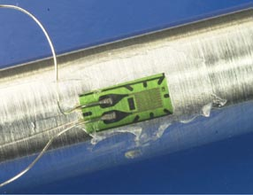
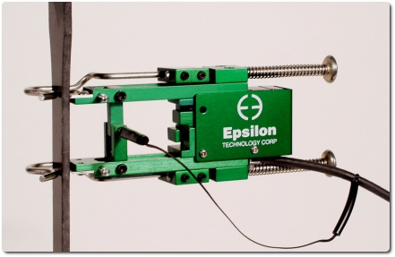

Stati tensionali multiassiali
Sforzo e deformazione sono rappresentati da tensori: in ogni punto assumono valori nelle tre direzioni spaziali.
Ad esempio in 2-D:
Sforzi tensionali:
Deformazioni (\(\varepsilon\)): \[
\varepsilon_x = \frac{\sigma_x}{E}- \nu \frac{\sigma_y}{E},~~~\varepsilon_y = \frac{\sigma_y}{E}- \nu \frac{\sigma_x}{E}
\] Quindi: \[
\sigma_x = \frac{E(\varepsilon_x + \nu\varepsilon_y)}{1-\nu^2},~~~ \sigma_y = \frac{E(\varepsilon_y + \nu\varepsilon_x)}{1-\nu^2}
\]
Sforzo a taglio:
Sforzo (\(\gamma\)) e deformazione (\(\tau\)) di taglio \[
\gamma_{xy} = \frac{\tau_{xy}}{G}
\]
Dove il modulo di taglio \(G\) è: \[
G=\frac{E}{2(1+\nu)}
\]
Stati tensionali multiassiali
Quindi, se posso misurare lo stato tensionale (deformazioni), posso ricavare lo stato di sforzo (sollecitazione) e capire quanto un dato sistema è in sicurezza
La misurazione dello stato tensionale può essere
- puntuale, cioè localizzata su un’area/volume più piccolo possibile, tipicamente comparabile al grado di omogeneità del materiale
- media, cioè valutata su una lunghezza base elevata, in modo da mediare l’effetto di variazioni locali
Come si misurano
- Estensimetri meccanici (a leva meccanica): sono stati i primi ad essere sviluppati in ambito industriale, ma non avendo un accettabile rapporto tra livello di accuratezza e costi di realizzazione, sono stati soppiantati da altri tipi. Un altro limite è costituito dal fatto che gli elementi meccanici presentano inevitabilmente inerzia e attriti che non consentono di fare misure di deformazioni dinamiche
- Estensimetri ottici (a leva ottica, fotoelastici, interferometrici): garantiscono elevate accuratezze, ma a causa dell’elevato costo sono generalmente impiegati solo in laboratori metrologici
- Estensimetri acustici: usano il principio della corda vibrante, ovvero il fatto che una corda vibrante emette onde sonore a differente frequenza a seconda della tensione della corda
- Estensimetri elettrici a resistenza: i più diffusi e più economici, realizzabili in diverse dimensioni, generalmente di ottima accuratezza, con facile circuito di lettura
Trasduttore estensimetrico a resistenza
Sono basati su principio che l’allungamento di un conduttore provoca una aumento di resisteza proporzionale all’allungamento stesso
La sensibilità è aumentata ripiegando il conduttore su se stesso più volte
- Un estensimetro (strain gauge) fornisce una misura puntuale (mediata sulla lunghezza della patch)
- Un estensometro (extensometer) fornisce una misura media mediante un meccanismo a leve che deforma un estensimetro


Leggi dell’estensimetria
La resistenza elettrica è \(R=\rho L/A\), con \(L\) lunghezza, \(A\) sezione e \(\rho\) resistività
In termini di variazione:
\[\begin{align}
\frac{\Delta R}{R} &= \frac{1}{R}\left( \frac{\partial R}{\partial\rho}\Delta \rho + \frac{\partial R}{\partial L}\Delta L +\frac{\partial R}{\partial A}\Delta A \right) = \frac{A}{\rho L}\left(\Delta \rho \frac{L}{A} + \Delta L \frac{\rho}{A} - \Delta A (\rho L)\right) \\
&=\frac{\Delta \rho}{\rho} + \frac{\Delta L}{L} - \frac{\Delta A}{A}
\end{align}\]
Rappresentando l’area mediante un fattore di forma \(C\) e un parametro caratteristico \(D\) si ha:
\[
A=CD^2 \rightarrow \frac{\Delta A}{A} = 2\frac{\Delta D}{D} \rightarrow \frac{\Delta R}{R} = \frac{\Delta \rho}{\rho} + \frac{\Delta L}{L} - 2\frac{\Delta D}{D}
\]
Leggi dell’estensimetria
Siccome \(\varepsilon_t = -\nu \varepsilon_l\), risulta che \(\Delta D/D = -\nu\Delta L/L\), e quindi:
\[
\frac{\Delta R}{R} = \frac{\Delta \rho}{\rho} + \frac{\Delta L}{L} - 2\left(-\nu\frac{\Delta L}{L}\right) = \frac{\Delta \rho}{\rho} + \frac{\Delta L}{L} (1 +2\nu)
\]
Sostituendo \(\varepsilon_l = \Delta L/L\) si ha la prima legge dell’estensimetria:
\[\begin{align}
\frac{\Delta R}{R} &= \varepsilon_l\frac{\Delta \rho}{\rho \varepsilon_l}+\varepsilon_l(1+2\nu) \\
&= \varepsilon_l\left(\frac{\Delta \rho}{\rho \varepsilon_l}+1+2\nu\right) =\varepsilon_l G_F
\end{align}\]
- \(\Delta \rho/(\rho \varepsilon_l)\) è la sensibilità piezoresistiva (per metalli: \(s_p\simeq 0.4\)); non dipende da \(\varepsilon_l\)
- \(1 + 2\nu\) è la sensibilità geometrica (\(\nu \simeq 0.3\), quindi \(s_g \simeq 1.6\))
- \(G_F\) è il gauge factor
Effetto della temperatura
La temperatura ha effetto:
- interferente, perché la variazione di resistenza dovuta alla dilatazione termica e all’effetto termoresistivo (\(\rho=\rho(T)\)) si sommano alla misura
- modificante, perché la temperatura modifica il valore del gauge factor per via della sensibilità piezoresistiva \(\Delta \rho/(\varepsilon_l \rho)\)
Questi termini vanno compensati o automaticamente, o note le relazioni con la temperatura, e comunque sempre mediante controllo statistico (casualizzazione della sequenza)
Effetto interferente della temperatura
Effetto termoresistivo: la resistività \(\rho_T\) alla temperatura \(T\) è
\[
\rho_T - \rho_0= \rho_0\alpha_\rho \Delta T
\] e quindi, in termini di variazione di resistenza rispetto alla temperatura di riferimento \(T_0\): \[
\Delta R_\rho = R(T) - R(T_0) = R_0\alpha_\rho\Delta T
\]
Cioè: \(\frac{\Delta R_\rho}{R_0} = \alpha_\rho\Delta T\)
Il coefficiente \(\alpha_\rho\) è il coefficiente di sensibilità termica della resistività; la relazione può considerarsi lineare per variazioni modeste di temperatura (decina di gradi C)
Effetto interferente della temperatura
Effetto della dilatazione termica: la variazione di temperatura agisce dilatando sia l’estensimetro che il materiale, in modo potenzialmente differente. Ne consegue una deformazione dell’estensimetro:
\[
\Delta L_{\Delta T} = L_0 (\alpha_m - \alpha_g)\Delta T\rightarrow\frac{\Delta L_{\Delta T}}{L_0}=\varepsilon_{\Delta T}=(\alpha_m - \alpha_g)\Delta T
\]
In termini di variazione di resistenza associata:
\[
\frac{\Delta R_{\Delta L}}{R_0} = G_F(\alpha_m - \alpha_g)\Delta T
\] Combinando:
\[
\frac{\Delta R_{\Delta T}}{R_0} = \frac{\Delta R_{\Delta L}}{R_0} + \frac{\Delta R_\rho}{R_0} = \left(\alpha_\rho + G_F(\alpha_m - \alpha_g) \right)\Delta T
\]
Autocompensazione
Dato che:
\[
\frac{\Delta R_{\Delta T}}{R_0} = \left(\alpha_\rho + G_F(\alpha_m - \alpha_g) \right)\Delta T
\]
in certi casi è possibile scegliere un materiale dello strain gauge (e quindi un valore di \(\alpha_g\)) tale che sia
\[
G_F(\alpha_m - \alpha_g)\approx\alpha_\rho
\] e, quindi, risulti \(\frac{\Delta R_{\Delta T}}{R_0} \approx 0\)
In questo caso lo strain gauge si dice autocompensato in temperatura
Effetto modificante della temperatura
- L’effetto modificante è connesso alla dipendenza dalla temperatura del termine piezoresistivo che compare nella formula del fattore di taratura \(G_F\)
- I materiali comunemente adottati per gli estensimetri elettrici a resistenza, e in particolare la costantana, manifestano un ridotto contributo piezoresistivo al fattore di taratura, di conseguenza anche l’effetto modificante non ha rilevanza nell’impiego a temperatura ambiente, in particolare indicata con \(T_0=24^\circ\mathrm{C}\) per un campo di temperature compreso in \(\pm25^\circ\mathrm{C}\) rispetto \(T_0\), l’eventuale correzione da apportare al fattore di taratura è minore del 0.5% e quindi solitamente dello stesso ordine di grandezza dell’incertezza con cui è noto tale parametro
- La compensazione dell’effetto \(G_F=G_F(T)\) viene calibrata empiricamente dal costruttore che fornisce la sensitività \(\beta\) in: \[
G_F(T) = G_{F,0} (1 - \beta(T- T_0))
\]
Misura della variazione di resistenza
- Le misure differenziali sono sempre preferibili perché danno maggiore sensibilità
- Nel circuito a ponte di Wheatstone se le resistenze sono tutte uguali il ponte è detto bilanciato e \(V_\mathrm{out}=0\)
- In generale vale:
\[
V_\mathrm{out} = \frac{V_\mathrm{in}}{4}\left( \frac{\Delta R_1}{R_1} - \frac{\Delta R_2}{R_2} + \frac{\Delta R_3}{R_3} - \frac{\Delta R_4}{R_4}\right)
\]
Cioè: variazioni su rami adiacenti si sottraggono; variazioni su rami opposti si sommano!
Misura della variazione di resistenza: quarto di ponte
Se una delle 4 resistenze è un estensimetro resistivo:
\[
V_\mathrm{out} = \frac{V_\mathrm{in}}{4}\left( \frac{\Delta R_1}{R_1}\right) = \frac{V_\mathrm{in}}{4}G_F\varepsilon_l
\]
Misura della variazione di resistenza: mezzo ponte
Se sue resistenze adiacenti sono ER, la seconda può compensare la temperatura:
\[
V_\mathrm{out} = \frac{V_\mathrm{in}}{4}\left( \frac{\Delta R_1}{R_1} - \frac{\Delta R_2}{R_2}\right)
\] Se sue resistenze opposte sono ER, la combinazione aumenta la sensibilità:
\[
V_\mathrm{out} = \frac{V_\mathrm{in}}{4}\left( \frac{\Delta R_1}{R_1} + \frac{\Delta R_3}{R_3}\right)
\]
Misura della variazione di resistenza: ponte intero
Si usano 4 ER, a due a due compensati in temperatura e raddoppiando la sensibilità
\[
V_\mathrm{out} = \frac{V_\mathrm{in}}{4}\left( \frac{\Delta R_1}{R_1} - \frac{\Delta R_2}{R_2} + \frac{\Delta R_3}{R_3} - \frac{\Delta R_4}{R_4}\right)
\]
Dinamometro a mensola
Nell’esercizio sul dinamometro a mensola si è usata l’espressione: \[
V=3/2GV_i\frac{lG_F}{EBH^2}F+V_0
\] Per una trave snella la deformazione massima è: \[
\varepsilon_l = \frac{6l}{EBH^2}F
\]
e per il quarto di ponte si ha (con \(V_i=GV_\mathrm{in}\) e \(V_0\) che è la tara): \[\begin{align}
V_\mathrm{out} &= \frac{V_\mathrm{in}}{4}\left( \frac{\Delta R_1}{R_1}\right) = \frac{V_\mathrm{in}}{4}G_F\varepsilon_l \\
\frac{V}{V_\mathrm{in}} &= \frac{\varepsilon_l}{4}G_F = \frac{6l}{4EBH^2}F G_F = 3/2\frac{lG_F}{EBH^2}F
\end{align}\]